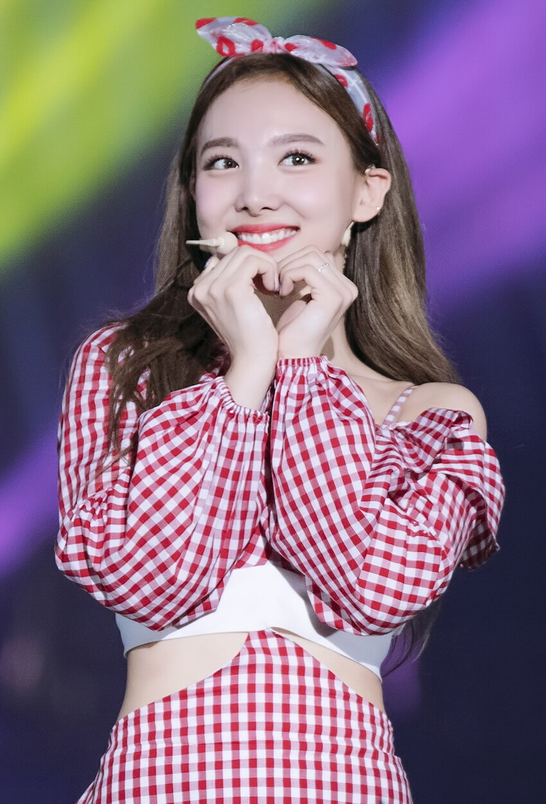
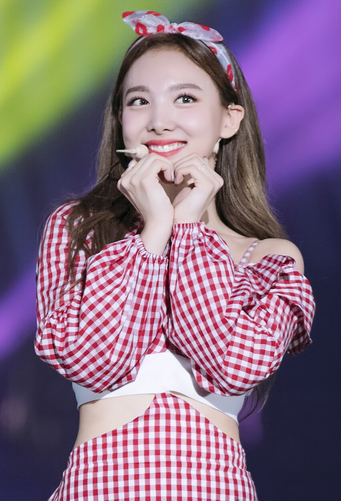

Nayeon |
|
Personal information |
|
| Birth name | Im Na-yeon |
| Birth date | September 22, 1995 |
| Birth place | Seoul, South Korea |
| Height | 163 cm |
| MBTI | ISTP-A |
Career |
|
| Occupation | Singer, lyricist |
| Group debut | October 20, 2015 |
| Years active | 2015–present |
| Agency | JYP Entertainment |
Official links |
|
| Twice page | |
Im Na-yeon (Hangul: 임나연, Japanese: イム ナヨン), better known by her stage name, Nayeon (Hangul: 나연, Japanese: ナヨン) is a South Korean singer. She is the oldest member, lead vocalist and face of the girl group Twice.
Contents
Life and career
On September 22, 1995 in Seoul, South Korea, Nayeon was born into a Christian family that consists of her parents and younger sister by three years, Im Seo-yoon.
Nayeon secretly tried out and passed JYP Entertainment's 7th Open Audition and became a trainee on September 15, 2010. In 2013, she was cast as a member of 6mix, a JYP girl group that was planned but never debuted.
In 2013, she was cast as a member of 6mix, a JYP girl group that was planned but never debuted. She also made an appearance in the second episode of KBS2's 2012 Korean drama Dream High 2.
Filmography
Music video appearances
- Miss A - "Bad Girl, Good Girl" backup dancers (2010)
- San E - "Please Don't Go" (2011)
- GOT7 - "Girls Girls Girls" (2014)
- Jun. K - "No Love" (2014)
- miss A - "Only You" (2015)
- Park Jin Young - "Fire" (feat. Conan O'Brien, Steven Yeun, & Jimin Park) (2016)
- Jun. K - "Your Wedding" (2017)
TV shows
- Sixteen (Mnet) - 2015
Discography
Composition credits
- Twicetagram - 24/7 (W)
- Feel special - Rainbow (W)
- Feel special - 21:29 (W)
- More & More - MAke Me Go (W)
- Eyes wide open - Depend on you (W)
- Taste of love - Baby blue love (W)
- Formula of Love: O+T=<3 - F.I.L.A. (Fall in Love Again) (W)
Vocal covers
- Nayeon - Only Longing Grows 그리움만 쌓이네 (For Once and Mina's Birthday present)
- Nayeon - Santa Tell Me by Ariana Grande
- Nayeon - I LOVE... by Official HIGE DANdism Cover Vocals Only
- Nayeon - Falling by Harry Styles Cover Vocals Only
- Nayeon - Love Is Everything by Ariana Grande
Collaborations
- "I'LL SHOW YOU" - K/DA (With Nayeon, Jihyo, Chaeyoung, Bekuh Boom and Annika Wells)
Pets

Gallery

 
